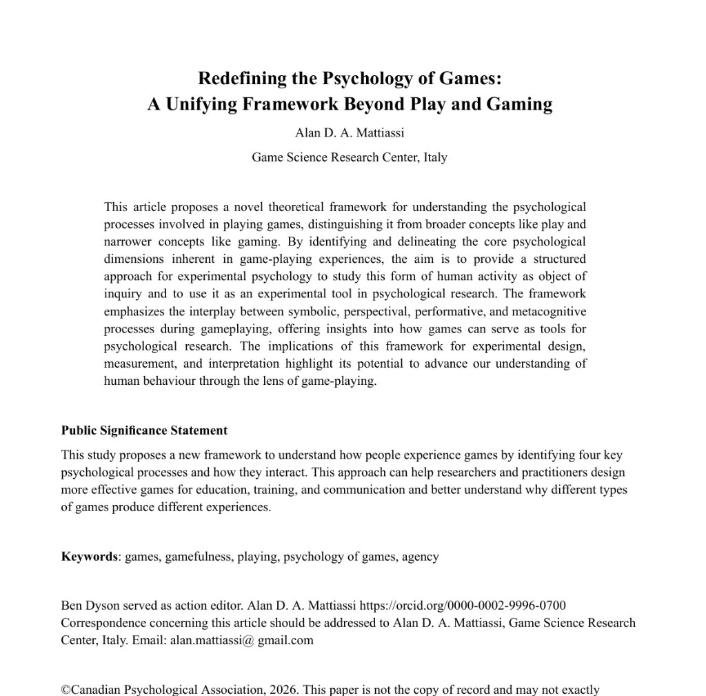

ARCHITETTURA PSICOLOGICA DEL GIOCO
Verso un framework unificato
UNA PAROLA, UNA SEMANTICA ETEROGENEA.
In italiano la radice gioc- (dal latino iocus: scherzo, burla) racchiude fenomeni che altre lingue separano. Qui ci concentriamo sul game (playing a game → gameful): un sistema strutturato con regole, obiettivo ed efficacia d'azione.
FRAMMENTAZIONE EPISTEMICA.
Nella letteratura psicologica con «game» si indicano attività diverse: Scacchi e Cluedo, Tomb Raider e Dungeons & Dragons, World of Warcraft e Nascondino. Senza una teoria unificante, ogni evidenza resta un caso singolo non generalizzabile.
LE BASI DEGLI STUDI SUL GIOCO: CULTURA E SVILUPPO.
Per quasi un secolo il gioco è stato letto da antropologi, filosofi e psicologi dello sviluppo sotto l'ombrello ampio del play: contributi fondamentali, ma con lessici e oggetti di studio differenti.
I GIGANTI DELLA PSICOLOGIA MODERNA.
Etologia, motivazione, neuroscienze e psicologia cognitiva hanno prodotto svolte decisive. Eppure fino a oggi quasi tutte queste teorie hanno osservato il play o singoli stati, lasciando i games frammentati.
TROPPO LARGO, TROPPO STRETTO.
La psicologia ha guardato storicamente al play (troppo ampio) o recentemente al gaming (ristretto al digitale). Il costrutto di gamefulness indica la svolta: studiare i giochi come sistemi psicologici.
LA FUNZIONE ORIGINARIA: APPRENDERE.
Il gioco non nasce come divertimento né come invenzione umana: compare nell'evoluzione di molte specie come contesto di apprendimento. Se togliamo l'infrastruttura accessoria, vediamo la funzione di base — e capiamo cosa aggiunge il game.
PERCHÉ GIOCHIAMO? I 12 FATTORI.
Partendo dalle 57 principali scale in letteratura, lo studio di Firenze (Gursesli, Martucci, Mattiassi, Duradoni & Guazzini, 2024) ha validato la scala PMPVGs: 12 fattori motivazionali distinti nei videogiochi.
PALESTRA SICURA E AGENCY.
I giochi ereditano dal play la funzione evolutiva di apprendimento a basso rischio (Graham & Burghardt, 2010), amplificata da vincoli formali. La loro firma distintiva è l'agency (Nguyen, 2025): percepirsi origine di azione e conseguenze.
IL FRAMEWORK UNIFICATO.

QUATTRO DIMENSIONI, UN SISTEMA.
Non sono «contenitori» rigidi di singoli processi, ma organizzazioni funzionali. Le stesse funzioni cognitive (attenzione, pianificazione, perspective-taking) vengono reclutate in modo flessibile lungo il ciclo.
CORNICE SIMBOLICA REGOLATA.
Regulated Symbolic FramingLe regole non sono semplici divieti: sono schemi cognitivi generativi (Piaget, 1951). Delimitano lo spazio d'azione ma generano nuove possibilità e risignificano oggetti e gesti in simboli condivisi.
PROSPETTIVA DI RUOLO ALTERATA.
Altered Role PerspectiveIl giocatore abita una funzione o identità che trasforma percezione e decisioni: vive una prospettiva stratificata, decidendo come se stesso dentro i vincoli e gli obiettivi di un altro ruolo.
PERFORMANCE ORIENTATA ALL'OBIETTIVO.
Goal-Organized PerformancePerseguire l'obiettivo prelusorio / lusorio (Suits, 1978) trasforma azioni arbitrarie in condotta strutturata. La sfida attiva problem solving, competenza percepita, autoefficacia e stato di flow.
MONITORAGGIO ESECUTIVO METACOGNITIVO.
Metacognitive Executive MonitoringGiocare non è eseguire un piano, ma regolarlo a meta-livello: rilevazione immediata degli errori, riflessione strategica, mentalizzazione degli altri e inibizione degli script relazionali esterni.
COSA SUCCEDE SE UNA DIMENSIONE NON VIENE ATTIVATA?
Le quattro dimensioni sono condizioni minime necessarie. Spegnendone anche una sola, la configurazione psicologica del gamefulness collassa in un'esperienza diversa.
UNA NUOVA TASSONOMIA.
Tutte e quattro le dimensioni sono sempre presenti, ma con salienza differenziale (Figure 1 del paper). Possiamo confrontare i giochi per profilo psicologico anziché per genere o supporto.
DAL CONCETTO ALL'ESPERIMENTO.
Il framework rende il gioco un sistema parametrabile: consente di isolare e manipolare singole dimensioni (Table 1) e testare effetti di interazione (H1–H7), in modo complementare a SDT e Flow.
PSICOLOGIA DEL GIOCO.
Il primo manuale di psicologia dedicato al gioco (Hogrefe Editore, 2026): 13 capitoli per ricomporre la frammentazione tra etologia, cognizione, neuroscienze, psicologia sociale e applicazioni.
Un linguaggio comune per studiare il gioco.

Masterclass in Psicologia del Gioco
Capire e Progettare Ambienti, Scelte e Apprendimento Profondo
Friuli (In presenza)
2 giornate intere